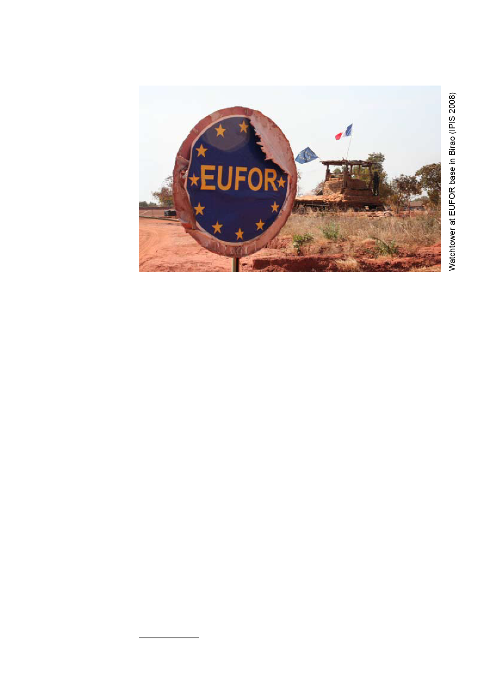

Part 3: Analysis
The East
CAR
Rebels
Socio-economic
Rebels
FACA
The East is by far the biggest of the three conflict regions but also the least
populated. Among the eastern prefectures Vakaga, Haute-Kotto, Haut-
Mbomou, Bamingui-Bangoran and Mbomou, the first three are the most
relevant to our analysis. Vakaga is the prefecture that in recent years has
seen the most warfare in the region. It borders both Chad and Sudan and
has clearly felt the impact of the conflict between its two neighbours. The
UFDR has positions in both the Vakaga and Haute-Kotto prefectures. The
Northeast of the CAR is very different from the rest of the country. The large
majority of its population is Muslim and people speak Arabic rather than
French or Sango, the CAR’s national language.
Haut-Mbomou borders both Sudan and the DRC. It is the area that was
attacked by the LRA in early 2008. Until recently, there was no international
humanitarian presence in the prefecture. Bearing in mind the nearly complete
absence of the Central African state in the east, it is probably the most
slighted area in the region and almost a blind spot.
Presence of UFDR
The UFDR has positions in the southern part of the Vakaga prefecture
and the northern part of Haute-Kotto. It operates several checkpoints on
the few (and most of the time nearly impassable) roads in the area, where
they demand taxes. It also controls several town centres. Apart from the
town of Sam-Ouandja, where they cooperate, the UFDR and the FACA are
not present in the same areas of the region. For more than 18 months,
the UFDR has been militarily well-nigh inactive. Many of its fighters have
become dormant. They have taken up artisanal diamond mining and farming
again but they can be called up when the need arises. In Sam-Ouandja, for
example, the presence of only 35 UFDR combatants is recognised officially
by Bangui, so they are the only ones that receive a monthly pay66. However,
66 Interview by IPIS with UFDR commander in Sam-Ouandja, November 2008.
25